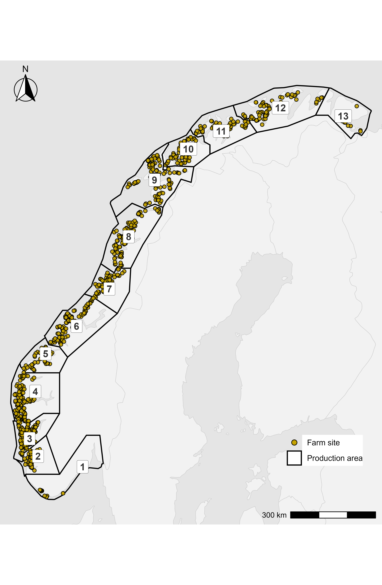
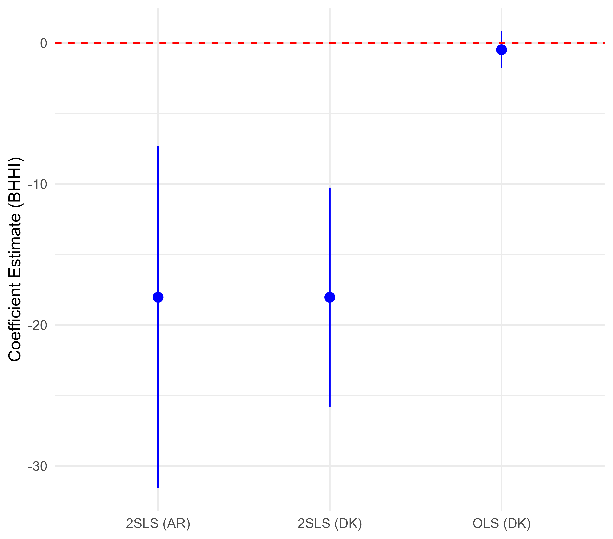
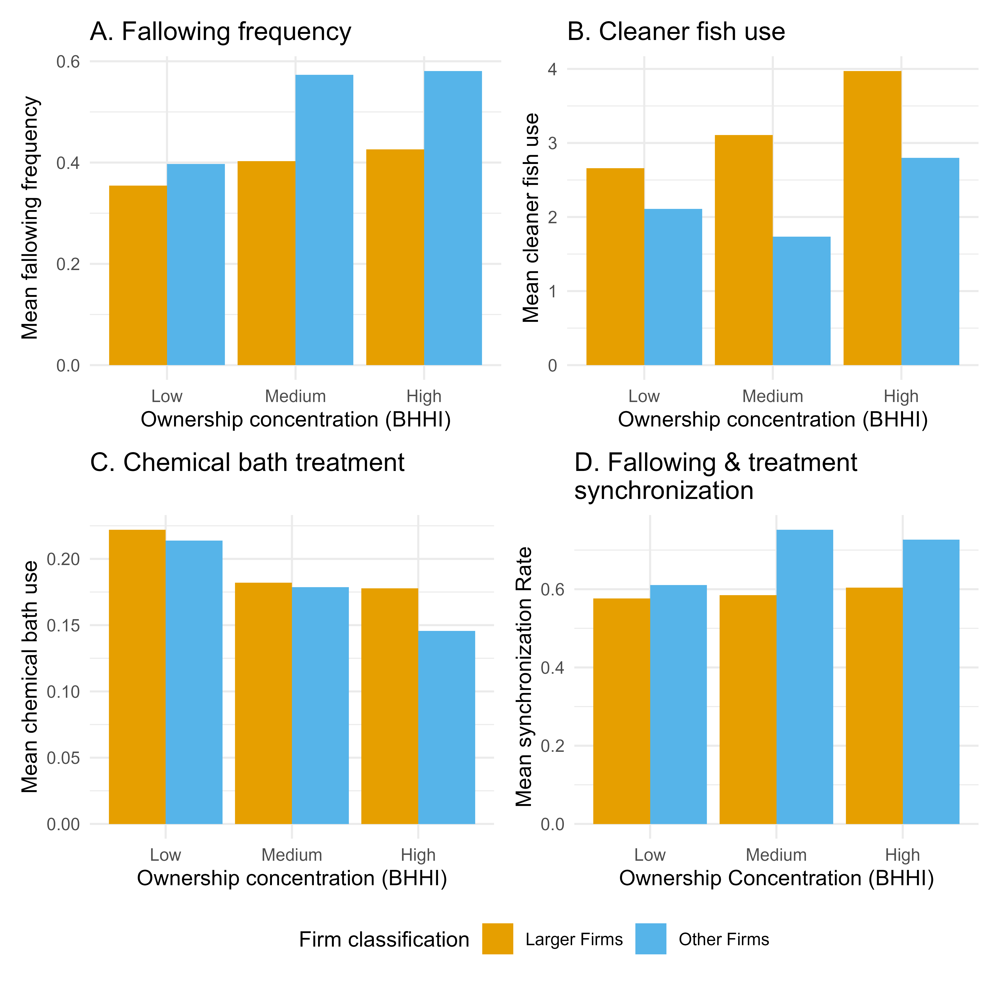
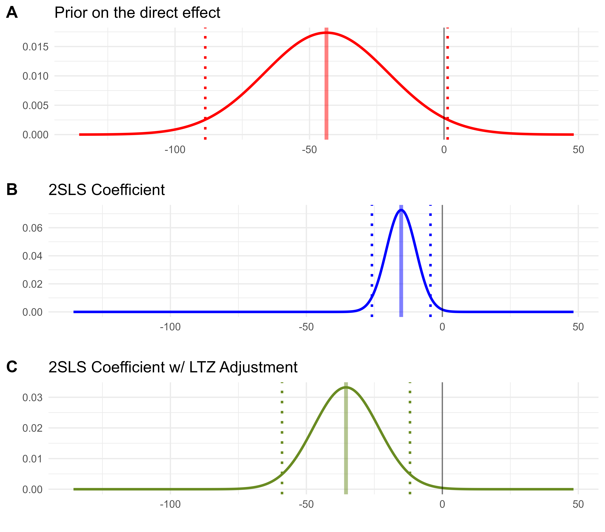

![]()
- Salmon lice move through the water and reach nearby farms.
- Having more shared ownership does not change the chance that lice first appear.
- When lice are present, more shared ownership helps coordinate treatments and reduces lice levels.
- A 100-point increase in HHI (i.e., +0.10 on a 0–1 scale) is linked to about 11–17% lower lice counts.
- Mechanism: it’s easier to time fallowing, cleaner-fish use, and treatments across sites under the same management.
- The coordination effect found in Norwegian salmon farming can apply to any setting where ecological processes—like pests, diseases, or pollution—cross property boundaries.
- Ownership concentration is one way to align incentives, but other mechanisms (cooperatives, regulations, or performance-based incentives) can achieve similar coordination if they include credible enforcement.
- The Norwegian Traffic Light System (TLS) puts this idea into policy: each production zone is treated as a single management unit with shared environmental targets.
- Zones with higher pre-existing ownership concentration may find it easier to meet TLS thresholds, since their firms already coordinate actions across farms.
Definitions:
HHI: concentration index from 0 to 10,000 (higher = more concentrated).
Extensive margin: whether lice show up at all.
Intensive margin: how severe lice are once present.
Abstract
Transboundary ecological processes, such as the spread of pests and diseases, require management strategies that align property rights with the spatial scale of these processes. The existing literature is predominantly based on theoretical models and qualitative case studies, and has posited that coordinated management can often mitigate spatial externalities. However, robust causal assessments of the effects of coordinated management remain scarce. To address the issue empirically, we differentiate between the probability of an initial salmon lice infestation (the extensive margin) and the severity of infestation once it occurs (the intensive margin) using a uniquely comprehensive dataset from Norwegian salmon aquaculture. The findings reveal that while ownership concentration does not significantly alter the likelihood of infestation, it substantially reduces severity by enabling coordinated management practices. This divergence demonstrates that firm incentives vary across these two dimensions. Although the empirical setting focuses on salmon lice in salmon aquaculture, the findings carry broader implications for industries facing similar spatial-dynamic externalities. In particular, ownership consolidation can encourage coordinated investments and interventions, potentially reducing the underinvestment typically observed when multiple firms share biologically connected resources.
Summary and additional insights
This paper is part of my doctoral dissertation. It was probably the one that convinced my advisor. I remember showing him the idea during our very first meeting on Zoom—at that time, it was the middle of the COVID lockdowns. To be honest, understanding the problem took a long journey. I actually started thinking about it back in 2018, in a general way: markets deliver good outcomes only when certain conditions hold—one of them being the absence of externalities.
I remember discussing this with my mentor, Jorge Dresdner, somewhere in Concepción, Chile. We were reflecting on what kind of good, in the most general sense, could exist without imposing an externality on others. That conversation led me to this specific problem in salmon aquaculture: parasites that use ocean currents to travel across farms, the uneven incentives producers have to control them, and the realization that individual efforts are almost always insufficient.
There is already a vast literature on this topic. Rebecca Epanchin-Niell has been, I think, one of its main contributors, and this paper can be seen as an empirical demonstration of her theoretical work. The logic is simple: why should I, as an individual, bear the cost of preventing a problem that also benefits my neighbor (this is probably true even if you are an altruistic person, all of us get tired at some moment in life)? Imagine someone living next door who lets their yard accumulate trash. It doesn’t affect me directly—until that waste begins spilling into the street. I could clean it once, maybe for a week, perhaps even for a month—but at some point my effort fades if there is no enforcement or shared responsibility.
Now imagine the same situation, but with living organisms—parasites, viruses, bacteria—moving freely through the environment. The complexity increases, but the underlying economics remain the same. These organisms do not recognize property boundaries, yet our management systems are organized as if they do. Salmon lice are only one example. The same principle applies to wildfires, citrus greening, banana wilt, avian influenza, and many other cases where ecological processes operate at scales larger than the property rights that govern them.
This paper, then, is not just about salmon lice or Norway. It is about how we organize management in systems where nature flows continuously and ownership does not. In the following, I go through the paper in a succinct way. The core contribution is to establish a causal link between ownership concentration of production sites and sea lice levels. Sea lice are parasites that cause substantial economic losses to the salmon industry and ecological harm to wild salmon populations. Despite continuous efforts to control this endemic parasite, outbreaks remain persistent. The paper shows that as the ownership concentration of production sites increases, parasite loads decrease. This effect likely arises because ownership consolidation aligns incentives with the biological scale of parasite transmission, leading to more coordinated and effective control efforts.
Context: transboundary ecological processes
- Pests and pathogens cross property boundaries, generating spatial externalities and under-investment in control when actions are uncoordinated.
- parasites and diseases do not stop at farm borders. When each farm acts on its own, no one fully invests in prevention, because some of the benefits spill over to neighbors.
- Aligning the scale of decision rights with ecological processes can improve outcomes (reduce negative externalities).
- If neighboring sites are managed together—under the same company, through cooperative agreements, or via coordinated rules—control measures can be timed and applied more effectively. The idea is that when the scale of management and property rights matches the ecological process that spreads the problem, collective control becomes both cheaper and more effective.
Research focus
Objective: Quantify how ownership concentration at the production-zone level affects salmon-lice outcomes at farms, distinguishing the extensive margin (probability of any lice) from the intensive margin (severity conditional on presence).
Key constructs and design
- Ownership concentration: Biomass Herfindahl–Hirschman Index (BHHI) computed across firms within each production zone and month.
- Outcomes:
- Extensive margin: indicator for any lice in a month.
- Intensive margin: log lice per ten fish, conditional on lice > 0.
- Identification:
- Instrument for BHHI:
\[ Z_{pt} \;=\; \log\!\left(\frac{1}{\sum_{p' \neq p} C_{p't}}\right), \] where \(C_{p't}\) is the number of active production cycles (farms) in other zones at time \(t\). - Fixed effects: year×quarter and cycle×firm (preferred), with an alternative set (year, quarter, cycle).
- Variance estimators: Driscoll–Kraay (L=6), Conley (30 km), and wild-cluster bootstrap by zone (reporting).
- Instrument for BHHI:
Setting: Norwegian salmon aquaculture
- 13 production zones regulate marine grow-out; analysis excludes atypical Zone 13 and high-concentration Zone 1 for comparability.
- Monthly farm-level panel, 2012–2017; industry reports lice, treatments, and environmental conditions at high frequency.

Main results
Extensive margin (first occurrence)
- No detectable effect of ownership concentration on the probability of initial infestation after accounting for FE and controls.
Intensive margin (severity conditional on presence)
- Higher BHHI → lower lice intensity. 2SLS estimates are negative and statistically significant across specifications.
- Magnitude: a 0.01 increase in BHHI is associated with roughly 11–17% lower lice levels (partial elasticity interpretation).
- Ordinary least squares is near zero; instrumented estimates are materially negative.

Mechanisms (descriptive patterns)
Descriptive comparisons show that production zones with higher ownership concentration employ proactive controls more intensively—firms fallow more frequently (especially larger firms) and use cleaner fish more—whereas fragmented zones rely more on reactive chemical bath treatments after thresholds are exceeded. Timing is also more coordinated in concentrated zones, with greater synchronization of fallowing and treatment applications. These patterns are consistent with the intensive-margin result: coordination reduces lice levels once infestations are present.

Identification, strength, and sensitivity
- First stage: instrument strongly predicts BHHI (first-stage F well above conventional thresholds).
- Variance estimators: results persist with Driscoll–Kraay and Conley (30 km). Wild-cluster bootstrap by zone yields larger p-values but the sign and magnitude are consistent.
- Anderson–Rubin test: rejects the null of no effect (report F and p in the paper).
- Local-to-Zero sensitivity (LTZ): allowing small violations of the exclusion restriction (anchored in a “zero-first-stage” subsample) does not overturn the negative effect; if anything, the magnitude strengthens.

Policy implications
The results indicate that coordination across farms reduces lice severity once infestations occur. Ownership concentration is one mechanism that enables coordination by aligning decision rights and treatment timing within production zones. Comparable coordination can be implemented through other arrangements—mandated synchronization of treatments and fallowing, producer cooperatives with enforceable schedules, or performance-based regulation (not tested in our analysis)—provided monitoring and enforcement are credible.
The Traffic Light System (TLS) operationalizes zone-level coordination by setting shared environmental thresholds for each production zone. Zones with higher pre-existing ownership concentration may be better positioned to meet TLS targets because within-zone coordination costs are lower.
References and citation
Use the journal citation once the AJAE metadata is finalized.
@article{CeballosConchaEtAl_AJAE_inpress,
author = {Adams Ceballos-Concha and Frank Asche and Andrew Ropicki and Conner Mullally and Jordan Moor},
title = {Matching Property Rights and Transboundary Ecological Processes: The Case of Norwegian Salmon Aquaculture},
journal = {American Journal of Agricultural Economics},
year = {in press},
note = {Accepted version; working paper summary}
}